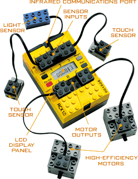

| Programming an E-machine for the Lego-RCX-Brick.
Demonstrating the execution of a control-application written in E-code on the E-machine on our RCX-robot.. |
 |
|
E-Code-Instruction |
3 optional E-Code-Instruction |
purpose |
| E_CALL | performs driver-calls to I/O-drivers, Task-drivers, mode-checkers, exeption-handling-drivers |
|
| E_JUMP |
E_JUMP_REL | jumps to an other address in e code |
| E_FUTURE | E_FUTURE_REL | enters new time-trigger into trigger-queue |
| E_RELEASE | releases task to the operating system |
|
| E_RETURN | marks end of an eblock, emachine lets released tasks to run |
|
| E_CANCEL | used for error handling: killing of tasks |
|
| E_IF | E_IF_REL | tests a boolean condition function and performs jump to this function returns true |
mode standby_mode ( ) period 250 {
exitfreq 1 when Condition_running do running_mode( );
taskfreq 1 do show_standby_mode( );
}
mode running_mode ( ) period 250 {
actfreq 1 do driver_actuator( );
exitfreq 1 when Condition_standby do standby_mode;
taskfreq 5 do motor_control(driver_OH2MC, driver_DC2MC);
taskfreq 5 do obstacle_handling(driver_sensor);
taskfreq 1 do dir_change( );
taskfreq 1 do show_running_mode( );
}
| condition-test |
delay-unit |
|||||
| Standby - Mode |
–––––––––––––––▶ | 1000 ms |
––––▶ | Running
- Mode |
||
| condition-test: no delay |
||||||
|
◀––––––––250 ms–––––––▶
|
◄———————————––––––––––– |
◀––––––––250 ms–––––––▶
|
||||
| Standby-Mode | Running-Mode |
|||||||||||||
|
Block 1 |
Block 1 |
Block 2 |
Block
3 |
Block
4 |
Block
5 |
|||||||||
| 1.driver-sensor |
◄––––––––––– | 1.condition-test for |
I/O-drivers |
|||||||||||
| 2.mode-switch-check |
condition test | mode switch |
1.driver motor |
|||||||||||
| 2.driver sensor |
||||||||||||||
| I/O-drivers |
||||||||||||||
| 2.driver motor |
task-drivers |
|||||||||||||
| delay | 3.driver sensor |
3.driver oh2mc |
||||||||||||
| –► | unit |
–► | task-drivers |
|||||||||||
| 1000 ms |
4.driver oh2mc |
|||||||||||||
| condition-test | 5.driver dc2mc |
|||||||||||||
| like |
like |
like |
||||||||||||
| # TASKS: 1 |
# TASKS: 4 |
# TASKS: 2..4 |
block 2 |
block 3 |
block 4 |
|||||||||
| ◄–3.show standby | ◄———————— 6. show_running-mode—(250 ms max)——— –– –► | |||||||||||||
| -mode–► | ◄———————— 7. direction_changee—(250 ms max)——— – – –► | |||||||||||||
| ◄–8.motor-control–► | ◄––4.motor-control––► | |||||||||||||
| ◄9.obstacle-handling► | ◄5.obstacle-handling► | |||||||||||||
| 4.set future to begin- |
10.set future to |
6.set future to |
6.set future |
|||||||||||
| ning of this block |
|
next block 2 |
next block 3 |
|
|
to block 2 |
||||||||
| ◀——––250 ms–—–—▶ | timeline | ◀––––––50 ms––––––▶ | ◀–50 ms–▶ | ◀–50 ms–▶ | ◀–50 ms–▶ | |||||||||
- The standby-mode's purpose is to wait for an activation-command in order to switch into the running-mode. This check is performed by the boolean condition-function Condition_running. If no activation-command arrived, a continous number is displayed by the task show_standby_mode.
This mode has a hyper-period of 250 ms.
Mode-Switching to standby-mode can be performed either by pressing the "Prgm"-Button on the RCX-Robot, or on the "Prgm"-Button on the remote-control.
The running-mode's purpose is to control the vehicle. After switching into this mode and mode-initialisation and check for switching back to standby-mode by the boolean function Condition_standby, this mode periodically checks all 50 msec whether an obstacle was hit or not. If hit, the vehicle chooses a new direction to get free. The robot, if not hit, selects new direction and speed all 250msec.
This mode has a hyper-period of 250msec
Mode-Switching to running-mode can be performed either by pressing the "View"-Button on the RCX-Robot, or on the "View"-Button on the remote-control.
For further details, please take a look at our e-code!
// This is our implementation of our RCX-project
// by
// Christine Grammerstätter
// Mohamed El Khattaf
// Richard Bauer
#include <conio.h>
#include <dsound.h>
#include <dsensor.h>
#include <stdlib.h>
#include <time.h>
#include <dmotor.h>
#include <lnp.h>
#include <dkey.h>
#include <tm.h>
/////////////////
// Definitions //
/////////////////
#define boolean unsigned char
#define TRUE 1
#define FALSE 0
#define FREE_TASK 0
// Errors
#define ERR_CALL -1 // task is still running, release of task not possible
#define ERR_RELEASE -2 // task is still running, release of task not possible
#define ERR_FUTURE -3 // no free entry in trigger_queue found
#define ERR_FUTURE_REL -4 // no free entry in trigger_queue found
#define ERR_IF -5 // e_PC out of bounds
#define ERR_IF_REL -6 // e_PC out of bounds
#define ERR_JUMP -7 // e_PC out of bounds
#define ERR_JUMP_REL -8 // e_PC out of bounds
#define ERR_ILLEGAL_OPCODE -9 // the emachine detected an illegal opcode
#define ERR_WRAPPER -10 // illegal or undefined address in wrapper-array
#define ERR_MSLEEP -11 // no valid (time)-trigger found for emachine to wake up
#define ERR_WRONG_DIRECTION -12 // should not occur!
#define ERR_INVOKE -13 // an error was detected during execution of invoke
#define ERR_PC -14 // should not occur!
// define the E-Code instructions
#define E_RETURN 0 // end of e-block
#define E_CALL 1 // driver-call
#define E_RELEASE 2 // release task to task-queue of the OS
#define E_FUTURE 3 // future wake-up for the emachine
#define E_FUTURE_REL 4 // future wake-up for the emachine
#define E_IF 5 // testing of a boolean-function and performing a jump according the this function
#define E_JUMP 6 // absolute jmp to an address
#define E_IF_REL 7 // relative-if easier to maintain
#define E_JUMP_REL 8 // relative-jmp
#define E_CANCEL 9 // cancels a running task
// note: the following constants are also used as an index into wrapper[] to get an connection to real phyical addresses
// define tasks
#define motor_control 2 // determines correct values for the motor-actuators
#define show_standby_mode 3 // user-task that shows the user, we are in standby-mode
#define show_running_mode 4 // user-task that shows the user, we are in running-mode
#define obstacle_handling 5 // findig out, if we hit an obstacle, and which way to correct the direction
#define dir_change 6 // randomly choosen new direction
// define condition-functions (for if-instruction)
#define mode_switch_1 7 // if we receive command "1" or "view"-button is pressed -> change to "running" mode
#define mode_switch_2 8 // if we receive command "0" or "prgm"-button is pressed -> change to "standby" mode
// define drivers
#define driver_actuator 9 // writing to the hardware (in this case its a system-call to BrickOS)
#define driver_sensor 10 // reading sensors (touch-Sensors and Communication occurance) to input-ports
#define driver_OH2MC 11 // communication-driver between Obstacle-Handling and Motor-Control
#define driver_DC2MC 12 // communicaiton-driver between Direction-Change and Motor-Control
#define driver_m_standby_init 13 // if we first enter mode1("standby") we call this driver
#define driver_m_running_init 14 // if we first enter mode2("running") we call this driver
#define clean_up_oh 15
#define clean_up_dc 16
#define clean_up_mc 17
#define clean_up_sstandbym 18
#define clean_up_srunningm 19
#define WRAPPER_MAX 19 // maximum-value into wrapper-array
#define time_trigger 1 // trigger-check-function for time-triggers
#define time_eps 2 // time inaccuracy for the msleep in ms, because otherwise the emachine will wake up too late!
// if you decrease one of the following two constants note to keep time_eps lower than these constants, otherwise tasks won't be executed!
#define Period_running 50 // you can change these two constants to see how the emachine works (>=15?)
#define Period_standby 250 // (>=20)
// E Command
struct eCommand{
unsigned int command; // kind of instruction
unsigned int method; // used by CALL, FUTURE, IF, RELEASE-Intruction
unsigned int time; // used by FUTURE
unsigned int e_address; // used by FURURE, JMP and IF-Instructions
};
// E Code pointers absolute
#define a_1 0
#define a_2 1
#define a_3 6
#define running_mode a_3
#define a_4 9
#define running_no_init a_4
#define a_5 20
#define a_6 27
#define a_c_motor 60
#define a_c_oh 57
#define a_c_dc 54
#define a_c_srm 51
#define a_c_ssm 48 // address of E-Code, if task exceeds time-constaint
// E Code pointers relative
#define r_a3 4
////////////
// E Code //
////////////
static const struct eCommand eCode[] = {
// S T A N D B Y - M O D E
// a_1:@0
{E_CALL, driver_m_standby_init, 0, 0},// 0 Standby-MODE-Initialisation
// a_2:@1
{E_CALL, driver_sensor, 0, 0},// 1
{E_IF_REL, mode_switch_1, 0, r_a3},// 2 Mode-switch-test: jmp into active-mode @a_3
{E_RELEASE, show_standby_mode, 0, a_c_ssm},// 3 displays spent time in standby-mode
{E_FUTURE, time_trigger,Period_standby,a_2},// 4 looping to a_2
{E_RETURN, 0, 0, 0},// 5
// R U N N I N G - M O D E
// a_3:@6 // start of running-mode
// start of running-mode
{E_CALL, driver_m_running_init, 0, 0},// 6 Running-MODE-Initialisation
// D E L A Y - U N I T
{E_FUTURE, time_trigger, 1000, a_4},// 7 give the hardware some time for initilisation
{E_RETURN, 0, 0, 0},// 8
// a_4:@9 1 1 1 1 1 1 1 1 1 1 1 1 1 1 1 1 this is block 1 of Running-Mode
{E_IF, mode_switch_2, 0, a_1},// 9 Mode-switch-test: jmp into standby-mode @a_1
// DRIVER-Calls
{E_CALL, driver_actuator, 0, 0},// 10 THE DRIVERS of block 1
{E_CALL, driver_sensor, 0, 0},// 11
{E_CALL, driver_OH2MC, 0, 0},// 12
{E_CALL, driver_DC2MC, 0, 0},// 13
// THE TASKS of block 1
{E_RELEASE, motor_control, 0, a_c_motor},// 14 processes output from obstacle-handling and direction-change, writes to motor-ports M1,M2
{E_RELEASE, obstacle_handling, 0, a_c_oh },// 15 checks if the robot hit any obstacle
{E_RELEASE, dir_change, 0, a_c_dc },// 16 randomly choosen direction change
{E_RELEASE, show_running_mode, 0, a_c_srm },// 17 show, that we are in running-mode:update user-display, (blinking "-")
{E_FUTURE_REL,time_trigger,Period_running,2},// 18 set time-trigger, loop to block 2
{E_RETURN, 0, 0, 0},// 19
// a_5:@20 2 2 2 2 2 2 2 2 2 2 2 2 2 2 2 2
{E_CALL, driver_actuator, 0, 0},// 20 this is block 2 of Running-Mode
{E_CALL, driver_sensor, 0, 0},// 21
{E_CALL, driver_OH2MC, 0, 0},// 22
// THE TASKS of block 2
{E_RELEASE, motor_control, 0, a_c_motor},// 23 processes output from obstacle-handling and direction-change, writes to motor-ports M1,M2
{E_RELEASE, obstacle_handling, 0, a_c_oh },// 24 checks if the robot hit any obstacle
{E_FUTURE_REL,time_trigger,Period_running,2},// 25 set time-trigger, loop to block 3
{E_RETURN, 0, 0, 0},// 26
// a_6@27 3 3 3 3 3 3 3 3 3 3 3 3 3 3 3 3
{E_CALL, driver_actuator, 0, 0},// 27 this is block 3 of Running-Mode
{E_CALL, driver_sensor, 0, 0},// 28
{E_CALL, driver_OH2MC, 0, 0},// 29
// THE TASKS of block 3
{E_RELEASE, motor_control, 0, a_c_motor},// 30 processes output from obstacle-handling and direction-change, writes to motor-ports M1,M2
{E_RELEASE, obstacle_handling, 0, a_c_oh },// 31 checks if the robot hit any obstacle
{E_FUTURE_REL,time_trigger,Period_running,2},// 32 set time-trigger, loop to block 4
{E_RETURN, 0, 0, 0},// 33
// a_7@34 4 4 4 4 4 4 4 4 4 4 4 4 4 4 4 4
{E_CALL, driver_actuator, 0, 0},// 34 this is block 4 of Running-Mode
{E_CALL, driver_sensor, 0, 0},// 35
{E_CALL, driver_OH2MC, 0, 0},// 36
// THE TASKS of block 4
{E_RELEASE, motor_control, 0, a_c_motor},// 37 processes output from obstacle-handling and direction-change, writes to motor-ports M1,M2
{E_RELEASE, obstacle_handling, 0, a_c_oh },// 38 checks if the robot hit any obstacle
{E_FUTURE_REL,time_trigger,Period_running,2},// 39 set time-trigger, loop to block 5
{E_RETURN, 0, 0, 0},// 40
// a_8@41 5 5 5 5 5 5 5 5 5 5 5 5 5 5 5 5
{E_CALL, driver_actuator, 0, 0},// 41 this is block 5 of Running-Mode
{E_CALL, driver_sensor, 0, 0},// 42
{E_CALL, driver_OH2MC, 0, 0},// 43
// THE TASKS of block 5
{E_RELEASE, motor_control, 0, a_c_motor},// 44 processes output from obstacle-handling and direction-change, writes to motor-ports M1,M2
{E_RELEASE, obstacle_handling, 0, a_c_oh },// 45 checks if the robot hit any obstacle
{E_FUTURE,time_trigger, Period_running, a_4},// 46 set time-triggers, loop back to start of "running"-mode
{E_RETURN, 0, 0, 0},// 47
// handling for timeout of task show_standby_mode
{E_CANCEL, show_standby_mode, 0, 0},// 48
{E_CALL, clean_up_sstandbym, 0, 0},// 49
{E_JUMP, 0, 0, a_1},// 50 restart standby-mode
// I could use a handling-code for each of the 5 blocks, but that is too much e_code ;-)
// handling for timeout of task show_running_mode
{E_CANCEL, show_running_mode, 0, 0},// 51
{E_CALL, clean_up_srunningm, 0, 0},// 52
{E_JUMP, 0, 0, a_4},// 53 goto eblock 1 of running-mode
// handling for timeout of task direction_control
{E_CANCEL, dir_change, 0, 0},// 54
{E_CALL, clean_up_dc, 0, 0},// 55
{E_JUMP, 0, 0, a_4},// 56 goto eblock 1 of running-mode
// handling for timeout of task obstacle_handling
{E_CANCEL, show_running_mode, 0, 0},// 57
{E_CALL, clean_up_oh, 0, 0},// 58
{E_JUMP, 0, 0, a_4},// 59 goto eblock 1 of running-mode
// handling for timeout of task motor_control
{E_CANCEL, show_running_mode, 0, 0},// 60
{E_CALL, clean_up_mc, 0, 0},// 61
{E_JUMP, 0, 0, a_4},// 62 goto eblock 1 of running-mode
{E_RETURN, 0, 0, 0},// 63
};
#define E_CODE_MAX 63
unsigned int e_PC; // E-Code Program Counter (0..63)
unsigned int wrapper[20];
// Trigger structure
struct trigger
{ // trigger function returns boolean if triggered
unsigned int trigger; // pointer to an adresss in the E Code
unsigned int e_address; // system start time in ms
unsigned long trigger_start; // trigger activation-time in ms
unsigned long trigger_delta; // time after which trigger becomes true
};
#define MAX_TRIGGER 20 // max index in trigger_queue (21 Entries)
#define FREE_TRIGGER 0 //
static struct trigger triggers[MAX_TRIGGER+1];// the trigger_queue
unsigned long msleep_wakeup = 0; // the next time-instant for the emachine to wake up
unsigned long start_time = 0; // start-time of the emachine
static tid_t task_sem[] = {FREE_TASK,FREE_TASK,FREE_TASK,FREE_TASK,FREE_TASK,FREE_TASK,FREE_TASK,FREE_TASK};
// The different directions of the vehicle
enum dir_t {turn_left, turn_right, turn_left_back, turn_right_back, forward, backward, stop, idle, nothing};
static enum dir_t new_direction = nothing; //
//\\ static enum dir_t new_direction = nothing; \\unsigned char MOTOR_ACTIVE = FALSE;
// The sensor actions that can occur
enum sensor_state { hit_front_center, hit_front_left, hit_front_right,
hit_back_center, hit_back_left, hit_back_right, NON };
struct driving_command { // used by Tasks Direction-Change, Obstacle-Handling and Motor-Control
int priority; //
enum dir_t direction; //
boolean changed; // set true, if driving_command has changed
int speed; //
signed long duration; // duration of the command in milliseconds
};
// used by Task Motor-control
static struct driving_command active_command;
unsigned char *RECEIVED =" ";// packet message-buffer, used commands are "11" and "22"
unsigned char task_lock = TRUE; // task may only run, after emachine has finished it's work
///////////
// PORTS //
///////////
static struct driving_command OH_OUT;
static struct driving_command MC_IN_OH;
static struct driving_command DC_OUT;
static struct driving_command MC_IN_DC;
static unsigned int S1, S2; // Values of input-sensors
static MotorDirection S3; // actual direction of the vehicle
static MotorDirection M1,M2; // M1=right motor, M2=left motor, //\\M3; M3=(optional) drawing-motor
static int SPEED; //, PAINT; // Port Paint is not used in this application, you can extend the robot, to control a 3rd motor with a pen on it in order to draw
boolean BREC=FALSE; // port set by brickOS if a ir-packet has been received
// forward-declarations for the compiler
unsigned long get_new_wakeup_time( );
boolean trigger_check( unsigned int i ); // calls the trigger method
int invoke( unsigned int e_PC ); // executes a block of E-Commands till E_RETURN
int err(int error); // displays errornumber error
enum sensor_state check_sensors (); // checks if we were hit
boolean time( unsigned int tr_index ); // testing of time-trigger
void Task_motor_control();
void Task_direction_change();
void Task_obstacle_handling();
void Task_show_standby_mode();
void Task_show_running_mode();
// Driver forward declarations
void Driver_sensor_input();
void Driver_motor_output();
void Driver_oh2mc();
void Driver_dc2mc();
void Driver_mode_standby_init ();
void Driver_mode_running_init ();
void Driver_motors_off();
void Driver_sensors_off();
int Cancel_oh();
int Cancel_dc();
int Cancel_mc();
int Cancel_running();
int Cancel_standby();
// Condtional-functions forward-declarations
boolean Condition_running();
boolean Condition_standby();
void my_message_handler(const unsigned char *data, unsigned char length)
{
unsigned int i;
BREC = TRUE; // set port BREC, so that the condtion-function
if (length>5) length=5; // "Condition_running" can check this
for (i=0; i<length; i++)
{
*(RECEIVED+i) = *(data+i);
} // for
} // my_message_handler
///////////////////////
// MAIN == E MACHINE //
///////////////////////
int main(int argc, char **argv)
{
unsigned int i = 0;
int error = 0;
long time2wait = 0;
lnp_integrity_set_handler( my_message_handler );
// enter tasks
wrapper[motor_control] = (unsigned int) &Task_motor_control;
wrapper[obstacle_handling] = (unsigned int) &Task_obstacle_handling;
wrapper[dir_change] = (unsigned int) &Task_direction_change;
wrapper[show_standby_mode] = (unsigned int) &Task_show_standby_mode;
wrapper[show_running_mode] = (unsigned int) &Task_show_running_mode;
// enter drivers
wrapper[driver_sensor] = (unsigned int) &Driver_sensor_input;
wrapper[driver_actuator] = (unsigned int) &Driver_motor_output;
wrapper[driver_OH2MC] = (unsigned int) &Driver_oh2mc;
wrapper[driver_DC2MC] = (unsigned int) &Driver_dc2mc;
wrapper[driver_m_standby_init]= (unsigned int) &Driver_mode_standby_init;
wrapper[driver_m_running_init]= (unsigned int) &Driver_mode_running_init;
// enter conditional-functions
wrapper[mode_switch_1] = (unsigned int) &Condition_running;
wrapper[mode_switch_2] = (unsigned int) &Condition_standby;
// enter handler-function for clean-up while canceling tasks
wrapper[clean_up_oh] = (unsigned int) &Cancel_oh;
wrapper[clean_up_dc] = (unsigned int) &Cancel_dc;
wrapper[clean_up_mc] = (unsigned int) &Cancel_mc;
wrapper[clean_up_sstandbym] = (unsigned int) &Cancel_standby;
wrapper[clean_up_srunningm] = (unsigned int) &Cancel_running;
// enter all kind of triggers; we only use time trigger
wrapper[time_trigger] = (unsigned int) &time;
for (i=0; i<MAX_TRIGGER; i++) triggers[i].trigger=FREE_TRIGGER; // init trigger_queue
e_PC = 0;
start_time = get_system_up_time();
msleep_wakeup = start_time;
// start execution of first e-block till first E_RETURN instruction or ERROR
error = invoke( e_PC );
if (error<0) err(error);
while ( !shutdown_requested () ) // test if user presses on-off key
{
// check all triggers
for ( i=0; i<=MAX_TRIGGER; i++ )
{
if ( trigger_check( i ) == TRUE ) // delete trigger from trigger queue
{
triggers[i].trigger = FREE_TRIGGER;
e_PC = triggers[i].e_address; // set Program Counter to e_address
error = invoke( e_PC ); // execute a block of e-code
if (error<0) err(error);
} // if
} // for
// compute the next time for the emachine to wake up (find earliest trigger)
msleep_wakeup = get_new_wakeup_time();
time2wait = (msleep_wakeup - get_system_up_time());
if ( time2wait > time_eps )
{
msleep( time2wait - time_eps ); // parameter of msleep: unsigned int!!!
// during msleep-operation, the OS will execute all released tasks
} // if
} // while
return 0;
}; // main
///////////////
// T A S K S //
///////////////
// TASK: motor-control: select the higher prioritized command, controls duration of actual command
// Input-Ports: MC_IN_OH, MC_IN_DC
// Output-Ports: M1,M2
void Task_motor_control()
{ // IN-port1: MC_IN_DC .... driving_command structure
// IN-port2: MC_IN_OH .... driving_command structure
// OUT-port1: M1 .... driving direction motor A
// OUT-port2: M2 .... driving direction motor B
if ( MC_IN_OH.changed == TRUE )
{ // we were hit
MC_IN_OH.changed = FALSE;
if ( MC_IN_OH.priority > active_command.priority || active_command.duration <= 0 )
{
active_command = MC_IN_OH;
dsound_system( DSOUND_BEEP );
cputc('H',3); // display info, that vehicle was hit
}
}
if ( MC_IN_DC.changed == TRUE )
{
MC_IN_DC.changed = FALSE;
if ( MC_IN_DC.priority > active_command.priority || active_command.duration <= 0 )
{
active_command = MC_IN_DC;
cputc('U',3); // display info, that vehicle decided to change direction
}
}
if ( active_command.duration > 0 ) // check direction
{ // duration //\\MOTOR_ACTIVE = TRUE;
switch ( active_command.direction )
{ // check direction
case forward:
cputc('F',3); // adjust motors
M1 = fwd;
M2 = fwd;
break;
case turn_left:
cputc('L',3); // driving rev, hit right
M1 = fwd;
M2 = brake;
break;
case turn_right:
cputc('R',3); // driving rev, hit left
M1 = brake;
M2 = fwd;
break;
case turn_right_back:
cputc('R',3);
cputc('R',4);
M1 = rev;
M2 = brake;
break;
case turn_left_back: // driving fwd, hit right
cputc('L',3);
cputc('L',4);
M1 = brake;
M2 = rev;
break;
case backward:
cputc('B',3);
M1 = rev;
M2 = rev;
break;
default:
cputc('N',3);
M1 = off;
M2 = off;
break;
}
SPEED = active_command.speed;
if (active_command.duration > Period_running)
active_command.duration = active_command.duration - Period_running;
else
active_command.duration = 0;
}
else
{
M1 = off;
M2 = off; //\\ MOTOR_ACTIVE = FALSE;
}
} // Task_motor_control
// TASK: direction-change: changes driving direction randomly
// Input-Ports: none
// Output-Ports: DC_OUT
void Task_direction_change()
{
long int left_right = ( random() % 4 ); // select new direction by random
long int rnd2; // = random() % 123;
rnd2 = (random ( ) % 4) +1;
if ((left_right == 0) || (left_right == 7))
{ // backward and forward should
DC_OUT.priority = 2; // be more often than turning around
DC_OUT.direction = backward;
DC_OUT.speed = MAX_SPEED/rnd2;
DC_OUT.duration = 4500 + ( random () % 6 );
DC_OUT.changed = TRUE;
}
else if ((left_right == 1 ) || (left_right == 6))
{
DC_OUT.priority = 2;
DC_OUT.direction = forward;
DC_OUT.speed = MAX_SPEED/rnd2;
DC_OUT.duration = 4500 + ( random () % 6 );
DC_OUT.changed = TRUE;
}
else if ( left_right == 2 )
{
DC_OUT.priority = 2;
DC_OUT.direction = turn_left;
DC_OUT.speed = MAX_SPEED;
DC_OUT.duration = 1000 + ( random () % 6 );
DC_OUT.changed = TRUE;
}
else if ( left_right == 3 )
{
DC_OUT.priority = 2;
DC_OUT.direction = turn_right;
DC_OUT.speed = MAX_SPEED;
DC_OUT.duration = 1000 + ( random () % 6 );
DC_OUT.changed = TRUE;
}
} // Task_direction_change
// internal function of task obstacle-handling
void set_oh_out (enum dir_t dir, unsigned int dur, unsigned int prio)
{
OH_OUT.direction= dir;
OH_OUT.priority = prio; // 4 if hit left or right, 3 if hit in center
OH_OUT.speed = MAX_SPEED;
OH_OUT.changed = TRUE;
OH_OUT.duration = dur;
} // set_oh_out
// internal function of tsak obstacle-handling
enum sensor_state check_sensors ()
{
enum sensor_state hitpoint = NON;
if ( S1 && S2 )
{ // now check the sensors
if ( S3 == rev ) // if the vehicle is driving backward ...
hitpoint = hit_back_center; // ... we know that it hit something on the back
else // ... driving forward -> we hit something on the front
hitpoint = hit_front_center;
}
else if ( S1 )
{
if ( S3 == rev )
hitpoint = hit_back_right;
else
hitpoint = hit_front_right;
}
else if ( S2 )
{
if ( S3 == rev )
hitpoint = hit_back_left;
else
hitpoint = hit_front_left;
}
return hitpoint;
} // check_sensors
// TASK: obstacle-handling: checking, whether an obstacle was hit, if hit determining new direction
// input-ports: S1, S2, S3
// output-ports: OH_OUT
// check if the vehicle hit something and react on it
void Task_obstacle_handling()
{
enum sensor_state sensors;
sensors = check_sensors (); // enum sensor_state sensors = check_sensors ();
switch ( sensors )
{
case NON:
if ((new_direction !=nothing) && (active_command.duration == 0))
{
cputc('5',2);
dsound_system( DSOUND_BEEP );
set_oh_out (new_direction, 500, 2);
new_direction = nothing;
}
else
{
cputc('6',2);
OH_OUT.changed = FALSE;
}
break; // default
case hit_front_right:
set_oh_out(turn_left_back, 500, 4);
new_direction = forward;
break;
case hit_front_left:
set_oh_out(turn_right_back, 500, 4);
new_direction = forward;
break;
case hit_front_center:
set_oh_out(backward, 1500, 3);
OH_OUT.speed = MAX_SPEED;
break;
case hit_back_center:
set_oh_out(forward, 1500, 3);
OH_OUT.speed = MAX_SPEED;
break;
case hit_back_right:
set_oh_out(turn_left, 500, 4);
new_direction = forward;
break;
case hit_back_left:
set_oh_out(turn_right, 500, 4);
new_direction = forward;
break;
default:
err(ERR_WRONG_DIRECTION); // will never occur!
break;
}
} // Task_obstacle_handling
// TASK: Show-Standby-mode: displayes spent time in seconds in "standby"-mode
// input-ports: none
// output-ports: none
void Task_show_standby_mode()
{
static unsigned long standby=0;
static long cancel_standby=0; // for testing of cancel-instruction
lcd_unsigned(standby/4);
// cputw(standby/4); // hex-output
standby++;
cancel_standby++;
if (cancel_standby==20) sleep(9); // simulate a task-crash in order to cause the emachine to cancel this task by violating the execution-time
} // Task_show_standby_mode
// TASK: show-running-mode: displays blinking "-" in order to show, we are in "running"-mode
// input-ports: none
// output-ports: none
void Task_show_running_mode()
{
static boolean h_1=0;
static long cancel_running=0; // for testing of cancel-instruction
h_1 = (h_1 == FALSE); //toggle h_1
if (h_1) cputc('8',5); else cputc(' ',5);
cancel_running++;
if (cancel_running==20) sleep(9); // simulate a task-crash in order cause the emachine to cancel this task by violating the execution-time
}
///////////////////
// D R I V E R S //
///////////////////
void Driver_motors_off()
{ // for fatal errors!!
M1 = brake;
M2 = brake;
motor_a_speed( 0 ); motor_a_dir( M1 );
motor_c_speed( 0 ); motor_c_dir( M2 );
}
void Driver_sensors_off()
{ // for fatal errors!!
ds_passive( &SENSOR_1 );
ds_passive( &SENSOR_2 );
ds_passive( &SENSOR_3 );
}
void Driver_motor_output()
{
motor_a_dir( M1 ); // set right motor's direction //\\ motor_b_dir( M3 );
motor_c_dir( M2 ); // set left motor's direction
motor_a_speed( SPEED ); // set right motor's speed //\\ motor_b_speed( PAINT ); // not used in this version
motor_c_speed( SPEED );
} // Driver_motor_output
// sensor driver
void Driver_sensor_input()
{
S1 = TOUCH_1; // read right sensor
S2 = TOUCH_3; // read left sensor
// first get the driving direction of the vehicle
// - This is important because our vehicle notices when
// - it hits something on the backside
// - But it uses the same sensors as for the front
if ( dm_a.dir == dm_a_pattern[rev] || // S3: get vehicle's direction //\\dm_b.dir == dm_a_pattern[rev] ||
dm_c.dir == dm_a_pattern[rev] )
S3 = rev;
else
S3 = fwd;
// cputc('S',0);
} // Driver_sensor_input
//////////////////////////////////////////////////
// task-drivers for communication between tasks //
//////////////////////////////////////////////////
void Driver_oh2mc()
{
MC_IN_OH = OH_OUT;
/* if (MC_IN_OH.changed == TRUE) { // for debugging
cputc('1',1);
}
else {
cputc('0',1);
} */
} // Driver_oh2mc
void Driver_dc2mc()
{
// cputc('2',1); for debugging
MC_IN_DC = DC_OUT;
} // Driver_dc2mc
void Driver_mode_standby_init (void)
{
static const note_t V[] = {
{ PITCH_G3, 1 },
{ PITCH_G3, 1 },
{ PITCH_G3, 1 },
{ PITCH_E3, 2 },
{ PITCH_PAUSE, 2 },
{ PITCH_G1, 1 },
{ PITCH_G1, 1 },
{ PITCH_G1, 1 },
{ PITCH_E1, 2 },
{ PITCH_PAUSE, 2 },
{ PITCH_PAUSE, 2 },
{ PITCH_PAUSE, 2 },
{ PITCH_END, 0 }
};
dsound_set_duration(150);
dsound_play(V);
cls ( );
motor_a_dir( 0 );
motor_b_dir( 0 );
motor_c_dir( 0 );
motor_a_speed( 0 );
motor_b_speed( 0 );
motor_c_speed( 0 );
} // Driver_mode_standby_init
void Driver_mode_running_init (void)
{
static const note_t V[] = {
{ PITCH_G3, 1 },
{ PITCH_E3, 1 },
{ PITCH_G3, 1 },
{ PITCH_E3, 2 },
{ PITCH_PAUSE, 2 },
{ PITCH_END, 0 }
};
dsound_set_duration(150);
dsound_play(V);
ds_active ( &SENSOR_2 ); // init hardware: sensors and sound
ds_passive( &SENSOR_1 );
ds_passive( &SENSOR_3 ); //\\ dsound_stop();
srandom( LIGHT( &SENSOR_2 ) );
ds_passive( &SENSOR_2);
active_command.priority= 1;
active_command.speed = MAX_SPEED/4;// initializing variables of "running-mode": drive vehicle forward
active_command.duration= 500;
active_command.changed = FALSE;
OH_OUT.priority = 0;
DC_OUT.priority = 0;
MC_IN_OH.priority = 0;
MC_IN_DC.priority = 0;
OH_OUT.direction = idle;
DC_OUT.direction = idle;
MC_IN_OH.direction = idle;
MC_IN_DC.direction = idle;
OH_OUT.changed = FALSE;
DC_OUT.changed = FALSE;
MC_IN_OH.changed = FALSE;
MC_IN_DC.changed = FALSE;
OH_OUT.speed = 0;
DC_OUT.speed = 0;
MC_IN_OH.speed = 0;
MC_IN_DC.speed = 0;
OH_OUT.duration = 0;
DC_OUT.duration = 0;
MC_IN_OH.duration = 0;
MC_IN_DC.duration = 0;
cls ( );
} // Driver_mode_running_init
/////////////////////////
// C O N D I T I O N S //
/////////////////////////
boolean Condition_running(void)
{ // check for mode-switch to running-mode
static char C_ModeSwitch1=0;
// if no remote-control available, mode-switch can be done by pressing the "View" or "Prgm" button
if (dkey == KEY_VIEW) C_ModeSwitch1 = TRUE;
else if (dkey == KEY_PRGM) C_ModeSwitch1 = FALSE;
else if (BREC==TRUE)
{ // Remote-Control comes from outside, Hardware-Ports to read are BREC and RECEIVED
cputc(*RECEIVED,0);
dsound_system( DSOUND_BEEP );
BREC=FALSE;
if ((*RECEIVED)=='1') C_ModeSwitch1 = TRUE; // switch to running-mode
else if ((*RECEIVED)=='2') C_ModeSwitch1 = FALSE; // switch to standby-mode
// earlier versions of remote-control:
// if ((*RECEIVED)=='1') PORT_ModeSwitch1 = (PORT_ModeSwitch1 == FALSE);// toggle PORT_ModeSwitch1
// else if ((*RECEIVED)=='3') PAINT = fwd;
// else if ((*RECEIVED)=='4') PAINT = rev;
(*RECEIVED) = 0; // clear message
}
return C_ModeSwitch1;
} // Condition_running
boolean Condition_standby(void)
{ // check, for mode-switch to standby-mode
return (TRUE - Condition_running()); // == opposite of Condition_running
}
/////////////////////////////////////
// C A N C E L - H A N D L I N G //
/////////////////////////////////////
int Cancel_oh()
{ // restart the current mode
Driver_motors_off( );
msleep_wakeup = get_system_up_time( )+3500;
e_PC = running_mode;
return TRUE;
}
int Cancel_mc()
{
Driver_motors_off( );
msleep_wakeup = get_system_up_time( )+3500;
e_PC = running_mode;
return TRUE;
}
int Cancel_dc()
{
Driver_motors_off( );
msleep_wakeup = get_system_up_time( )+3500;
e_PC = running_no_init;
return TRUE;
}
int Cancel_running()
{
Driver_motors_off( );
msleep_wakeup = get_system_up_time( )+3500;
e_PC = running_no_init;
return TRUE;
}
int Cancel_standby()
{
msleep_wakeup = get_system_up_time( )+3500;
e_PC = running_no_init;
return TRUE;
}
// check validity of requested index into wrapper and return physical address
int get_wrapper(int index)
{
if ((index>WRAPPER_MAX)||(index < 0)) return ERR_WRAPPER;
return wrapper[index]; //
} // get_wrapper
// manage scheduling to garanty time saftey
int schedule(int argv, char **argc)
{
void (*ptr)(void) = (void *) wrapper[ argv ]; // argv is a index to the wrapper array
while (task_lock) yield();
ptr();
task_sem[ argv ] = FREE_TASK; // task_sem contains either task_id if running
return TRUE; // or -1 if not
} // schedule
///////////////////////////////////
// T R I G G E R M E T H O D S //
///////////////////////////////////
// time trigger checker
boolean time( unsigned int tr_index )
{
unsigned long up_time = get_system_up_time() - triggers[tr_index].trigger_start;
if ( up_time < triggers[tr_index].trigger_delta )
return FALSE;
else
{
if ( up_time > triggers[tr_index].trigger_delta +3 )
{
cputc('T',2); // for debuggine, if we messed trigger more than 3 ms
}
return TRUE;
}
} // time
// event trigger checker: not used
boolean event( unsigned int tr_index )
{
return FALSE;
}
// task trigger checker: not used
boolean task( unsigned int tr_index )
{
return FALSE;
}
boolean trigger_check( unsigned int i )
{
boolean (*trigger_ptr)(int tr_nr);
unsigned int tr_method = triggers[i].trigger;
// if trigger is valid
if ( tr_method == 0 )
{
return FALSE;
}
else
{
trigger_ptr = (void * ) wrapper[ tr_method ]; // call the time method
return trigger_ptr( i ); // call trigger function and return value
}
} // trigger_check
int get_trigger(void)
{ // searches for a free available trigger in trigger_queue
unsigned char i;
for (i=0; i<=MAX_TRIGGER; i++) {
if (triggers[i].trigger == FREE_TRIGGER)
return i;
} // for
return -1; // sorry, but there is no free trigger available
} // get_trigger
unsigned long get_new_wakeup_time(void)
{ // determines the next point in time for the e machine
unsigned int i=0; // to wake up
int index=-1;
unsigned long min = 0xFFFFFFFE; // this are 48 days!
unsigned long temp= 0;
for (i=0; i<=MAX_TRIGGER; i++)
{
if (triggers[i].trigger != FREE_TRIGGER)
{
temp = triggers[i].trigger_start + triggers[i].trigger_delta;
if (temp < min)
{
min = temp;
index = i;
} // if
} // if
} // for
if (index!=-1) return (msleep_wakeup + (unsigned long) triggers[index].trigger_delta);
else
{
err(ERR_MSLEEP);
return -1;
}
} // get_new_wakep_time
int invoke( unsigned int e_PC )
{
int (*call_ptr)(void); // pointer to a function that returns int without any argument
int new_trigger = -1;
int tt = -1;
while ( eCode[e_PC].command != E_RETURN )
{
switch( eCode[e_PC].command )
{
case E_CALL:
call_ptr = (void * ) wrapper[ eCode[e_PC].method ];
call_ptr ();
e_PC++;
if ((e_PC<0) || (e_PC>E_CODE_MAX)) return err(ERR_PC);
break;
case E_RELEASE:
if ( task_sem[eCode[e_PC].method]!= FREE_TASK)
{// task cannot be released, its still running
cputc('0'+task_sem[eCode[e_PC].method],0);
err(ERR_RELEASE); // for humans to realize what happened, we beep
e_PC = eCode[e_PC].e_address;// fetch address of time_out handling
break;
}
else
{
// release the method "schedule" which may only run, if the emachine has done it's work
task_lock = TRUE;
task_sem[eCode[e_PC].method] = execi( schedule, eCode[e_PC].method, NULL, PRIO_NORMAL, DEFAULT_STACK_SIZE);
task_lock = FALSE;
}
e_PC++;
if ((e_PC<0) || (e_PC>E_CODE_MAX)) return err(ERR_PC);
break;
case E_FUTURE:
new_trigger = get_trigger( );
if ( new_trigger != -1)
{
triggers[new_trigger].trigger = eCode[e_PC].method;
tt = eCode[e_PC].e_address;
if ((tt<0) || (tt>E_CODE_MAX)) return err(ERR_PC);
triggers[new_trigger].e_address = tt;
triggers[new_trigger].trigger_start = get_system_up_time();
triggers[new_trigger].trigger_delta = eCode[e_PC].time;
}
else
{
err(ERR_FUTURE);
return ERR_FUTURE;
}
e_PC++;
if ((e_PC<0) || (e_PC>E_CODE_MAX)) return err(ERR_PC);
break;
case E_FUTURE_REL:
new_trigger = get_trigger( );
if ( new_trigger != -1)
{
triggers[new_trigger].trigger = eCode[e_PC].method;
tt = e_PC+eCode[e_PC].e_address;
if ((tt<0) || (tt>E_CODE_MAX)) return err(ERR_PC);
triggers[new_trigger].e_address = tt;
triggers[new_trigger].trigger_start = get_system_up_time();
triggers[new_trigger].trigger_delta = eCode[e_PC].time;
}
else
{
err(ERR_FUTURE_REL);
return ERR_FUTURE_REL;
}
e_PC++;
if ((e_PC<0) || (e_PC>E_CODE_MAX)) return err(ERR_PC);
break;
case E_JUMP:
e_PC = eCode[e_PC].e_address;
if ((e_PC<0) || (e_PC>E_CODE_MAX)) return err(ERR_JUMP);
break;
case E_JUMP_REL:
e_PC = e_PC + eCode[e_PC].e_address;
if ((e_PC<0) || (e_PC>E_CODE_MAX)) return err(ERR_JUMP_REL);
break;
case E_IF:
call_ptr = (void *) wrapper[ eCode[e_PC].method];
if (call_ptr ()==TRUE)
e_PC=eCode[e_PC].e_address;
else
e_PC++;
if ((e_PC<0) || (e_PC>E_CODE_MAX)) return err(ERR_IF);
break;
case E_IF_REL:
call_ptr = (void *) wrapper[ eCode[e_PC].method];
if (call_ptr ()==TRUE)
e_PC=e_PC + eCode[e_PC].e_address;
else
e_PC++;
if ((e_PC<0) || (e_PC>E_CODE_MAX)) return err(ERR_IF_REL);
break;
case E_RETURN:
return TRUE;
break;
case E_CANCEL: // kill task with logical tasknumber given in .e_address
kill (task_sem[eCode[e_PC].method]);
task_sem[eCode[e_PC].method] = FREE_TASK;
cputs("kill"); //msleep(300);
e_PC++;
break;
default:
return ERR_ILLEGAL_OPCODE;
} // switch
} // while
return TRUE;
} // invoke
int err(int error)
{
int i=error;
if (i<0)
{ i=-i;
cputc('-',5);
}
cls( );
switch (error)
{ // check for fatal errors that causes the e-machine to stop
case ERR_IF:
case ERR_IF_REL:
cputs("REL");
case ERR_JUMP:
case ERR_JUMP_REL:
case ERR_PC:
cputs("Fata");
dsound_system( DSOUND_BEEP );
cputc( i + '0',1);
Driver_motors_off();
Driver_sensors_off();
for (;i>0;i--) // beeping n-times of the error-value
{ dsound_system( DSOUND_BEEP );
msleep(300);
}
// reboot or shut down here
sleep(3600);
} // switch
cputs("Err"); //
cputc( error + '0',1);
for (;i>0;i--) { dsound_system( DSOUND_BEEP ); msleep(300);}
return error;
} // err
#include <conio.h>
#include <dsound.h>
#include <dsensor.h>
#include <stdlib.h>
#include <time.h>
#include <dmotor.h>
#include <lnp.h>
#include <dkey.h>
unsigned char *mode_switch_running="11"; // to turn into running-mode
unsigned char *mode_switch_standby="22"; // to turn into standby-mode
unsigned char *down ="33"; // put pen down
unsigned char *up ="44"; // put pen up
int send(unsigned char *data) {
lnp_integrity_write(data,2);
msleep(400);
return 1;
}
int main(int argc, char **argv) {
ds_passive( &SENSOR_1 );
ds_passive( &SENSOR_2 );
ds_passive( &SENSOR_3 );
dsound_stop();
while (!shutdown_requested ()) {
if (dkey>0) {
cputc('0'+dkey,4);
}
if (dkey == KEY_VIEW) {
cputs("-run");
send(mode_switch_running);
msleep(400); // avoid multiple switch
cputc(' ',4);cputc(' ',0);
}
else if (dkey == KEY_PRGM) {
cputs("-pause");
send(mode_switch_standby);
msleep(400); // avoid multiple switch
cputc(' ',4);
}
// we used a robot, that could also draw something with a 3rd motor, this functionality is not used here
/* if (dkey == KEY_PRGM) {
flippy = (flippy==0);
if (flippy) {
lnp_integrity_write(down,8);
cputc('d',0);
}
else {
lnp_integrity_write(up,8);
cputc('u',0);
}
} */
} // while
return 0;
} // main